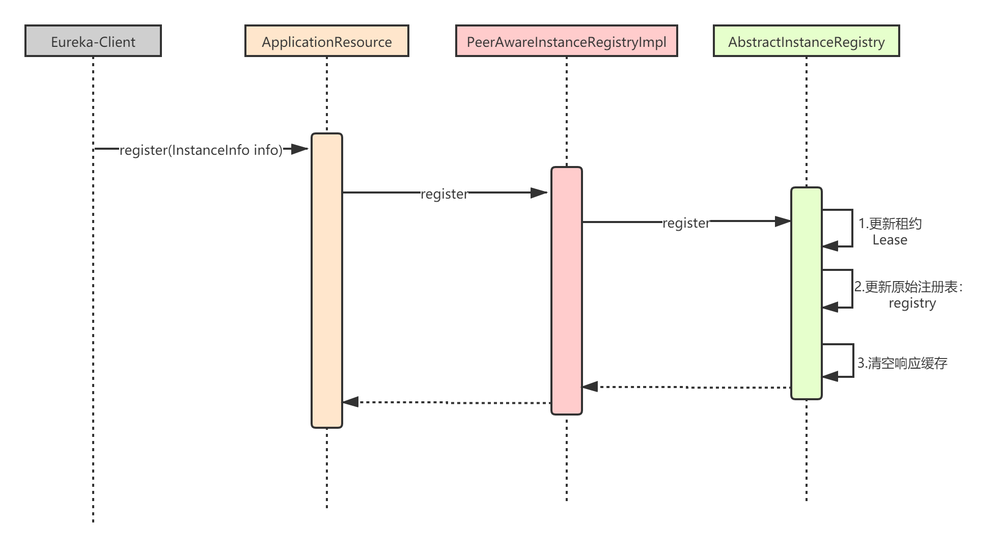
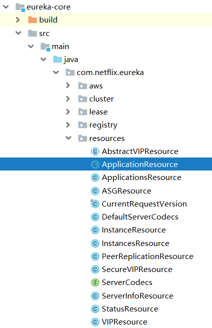

上一章，我们讲解了客户端（Eureka-Client）发起注册的流程，先来回顾下整个流程：
EurekaClient.register()方法；本章，我们就来看看服务端（Eureka-Server）接受注册的流程。Eureka-Server接受注册的核心过程，我用下面这张时序图表示：

应用实例注册的过程中，涉及了大量与租约（Lease）相关的逻辑，所以我们先来看下 com.netflix.eureka.lease.Lease。
public class Lease<T> {
// 租约的持有者。在 Eureka-Server 里，只有 InstanceInfo。
private T holder;
// 注册( 创建 )租约时间戳，就是租约对象的创建时间
private long registrationTimestamp;
// 开始服务时间戳，注册应用实例信息成后设置该值
private long serviceUpTimestamp;
// 取消注册时间戳
private long evictionTimestamp;
// 最后更新时间戳，每次续租时，更新该时间戳
private volatile long lastUpdateTimestamp;
// 租约有效期，单位：毫秒
private long duration;
public Lease(T r, int durationInSecs) {
holder = r;
registrationTimestamp = System.currentTimeMillis();
lastUpdateTimestamp = registrationTimestamp;
duration = (durationInSecs * 1000);
}
}
在eureka-core模块的resources包下面，有一堆的XXXRsource：

这些XXXResource类相当于是spring mvc中的Controller，用来接收http请求。其中ApplicationResource就是负责处理服务注册的Controller。
还记得
eureka-server模块中的jersy servlet吗？所有的http请求交由它进行处理，jersey的servlet会根据请求的路径，将请求转发给eureka core里面的resource（相当于是转发给某个controller）。
ApplicationResource的addInstance方法用来接受注册请求（比如：http://ip:port/v2/apps/ServiceA）：
@Produces({"application/xml", "application/json"})
public class ApplicationResource {
@POST
@Consumes({"application/json", "application/xml"})
public Response addInstance(InstanceInfo info,
@HeaderParam(PeerEurekaNode.HEADER_REPLICATION) String isReplication) {
// 防御式编程，校验参数是否合法
logger.debug("Registering instance {} (replication={})", info.getId(), isReplication);
// validate that the instanceinfo contains all the necessary required fields
if (isBlank(info.getId())) {
return Response.status(400).entity("Missing instanceId").build();
} else if (isBlank(info.getHostName())) {
return Response.status(400).entity("Missing hostname").build();
} else if (isBlank(info.getIPAddr())) {
return Response.status(400).entity("Missing ip address").build();
} else if (isBlank(info.getAppName())) {
return Response.status(400).entity("Missing appName").build();
} else if (!appName.equals(info.getAppName())) {
return Response.status(400).entity("Mismatched appName, expecting " + appName + " but was " + info.getAppName()).build();
} else if (info.getDataCenterInfo() == null) {
return Response.status(400).entity("Missing dataCenterInfo").build();
} else if (info.getDataCenterInfo().getName() == null) {
return Response.status(400).entity("Missing dataCenterInfo Name").build();
}
// ...AWS 相关，略
// 调用PeerAwareInstanceRegistryImpl的register方法，注册应用实例信息
registry.register(info, "true".equals(isReplication));
// 返回 204 成功
return Response.status(204).build(); // 204 to be backwards compatible
}
}
addInstance()方法，接收的是一个InstanceInfo，代表了一个应用实例。一个应用（Application）可能会部署在多台机器上，每台机器上部署运行的就是一个应用实例（InstanceInfo），每个应用实例id是不一样。
ApplicationResource只是一个Controller，真正的注册由PeerAwareInstanceRegistry.register方法完成：
// PeerAwareInstanceRegistryImpl.java
public void register(final InstanceInfo info, final boolean isReplication) {
// 1.获取租约有效期
int leaseDuration = Lease.DEFAULT_DURATION_IN_SECS;
if (info.getLeaseInfo() != null && info.getLeaseInfo().getDurationInSecs() > 0) {
leaseDuration = info.getLeaseInfo().getDurationInSecs();
}
// 2.调用父类方法完成注册
super.register(info, leaseDuration, isReplication);
// 3.Eureka-Server集群复制
replicateToPeers(Action.Register, info.getAppName(), info.getId(), info, null, isReplication);
}
PeerAwareInstanceRegistryImpl.register的逻辑比较清晰：
我们重点关注AbstractInstanceRegistry.register，它的核心逻辑如下：
// AbstractInstanceRegistry.java
// 注册表，保存应用名对应的所有实例以及租约
private final ConcurrentHashMap<String, Map<String, Lease<InstanceInfo>>> registry
= new ConcurrentHashMap<String, Map<String, Lease<InstanceInfo>>>();
public void register(InstanceInfo registrant, int leaseDuration, boolean isReplication) {
try {
read.lock();
// 根据应用名，获取这个应用的所有实例与租约的映射关系
Map<String, Lease<InstanceInfo>> gMap = registry.get(registrant.getAppName());
REGISTER.increment(isReplication);
// 首次注册时gMap==null
if (gMap == null) {
final ConcurrentHashMap<String, Lease<InstanceInfo>> gNewMap = new ConcurrentHashMap<String, Lease<InstanceInfo>>();
gMap = registry.putIfAbsent(registrant.getAppName(), gNewMap);
if (gMap == null) {
gMap = gNewMap;
}
}
// 获取应用实例对应的租约，registrant.id就是实例ID
Lease<InstanceInfo> existingLease = gMap.get(registrant.getId());
// 1.租约已存在
if (existingLease != null && (existingLease.getHolder() != null)) {
// 原租约对应实例的时间戳
Long existingLastDirtyTimestamp = existingLease.getHolder().getLastDirtyTimestamp();
// 当前实例的时间戳
Long registrationLastDirtyTimestamp = registrant.getLastDirtyTimestamp();
logger.debug("Existing lease found (existing={}, provided={}", existingLastDirtyTimestamp, registrationLastDirtyTimestamp);
// 大于说明，原租约的实例信息更加新，所以把它作为要注册的实例
if (existingLastDirtyTimestamp > registrationLastDirtyTimestamp) {
logger.warn("There is an existing lease and the existing lease's dirty timestamp {} is greater" +
" than the one that is being registered {}", existingLastDirtyTimestamp, registrationLastDirtyTimestamp);
logger.warn("Using the existing instanceInfo instead of the new instanceInfo as the registrant");
registrant = existingLease.getHolder();
}
}
// 2.租约不存在
else {
synchronized (lock) {
// 集群的自我保护机制相关，后续章节讲解
if (this.expectedNumberOfRenewsPerMin > 0) {
this.expectedNumberOfRenewsPerMin = this.expectedNumberOfRenewsPerMin + 2;
this.numberOfRenewsPerMinThreshold =
(int) (this.expectedNumberOfRenewsPerMin * serverConfig.getRenewalPercentThreshold());
}
}
logger.debug("No previous lease information found; it is new registration");
}
// 3.创建一个新租约，并更新注册表
Lease<InstanceInfo> lease = new Lease<InstanceInfo>(registrant, leaseDuration);
if (existingLease != null) {
lease.setServiceUpTimestamp(existingLease.getServiceUpTimestamp());
}
gMap.put(registrant.getId(), lease);
// 添加到最近注册的调试队列，用于Eureka-Server运维界面的显示，忽略即可
synchronized (recentRegisteredQueue) {
recentRegisteredQueue.add(new Pair<Long, String>(
System.currentTimeMillis(),
registrant.getAppName() + "(" + registrant.getId() + ")"));
}
// 设置应用实例覆盖状态，后续章节讲解
if (!InstanceStatus.UNKNOWN.equals(registrant.getOverriddenStatus())) {
logger.debug("Found overridden status {} for instance {}. Checking to see if needs to be add to the "
+ "overrides", registrant.getOverriddenStatus(), registrant.getId());
if (!overriddenInstanceStatusMap.containsKey(registrant.getId())) {
logger.info("Not found overridden id {} and hence adding it", registrant.getId());
overriddenInstanceStatusMap.put(registrant.getId(), registrant.getOverriddenStatus());
}
}
InstanceStatus overriddenStatusFromMap = overriddenInstanceStatusMap.get(registrant.getId());
if (overriddenStatusFromMap != null) {
logger.info("Storing overridden status {} from map", overriddenStatusFromMap);
registrant.setOverriddenStatus(overriddenStatusFromMap);
}
// 获得应用实例最终状态，并设置应用实例的状态
InstanceStatus overriddenInstanceStatus = getOverriddenInstanceStatus(registrant, existingLease, isReplication);
registrant.setStatusWithoutDirty(overriddenInstanceStatus);
// 设置租约的开始服务时间戳
if (InstanceStatus.UP.equals(registrant.getStatus())) {
lease.serviceUp();
}
// 设置应用实例的操作类型为"添加"
registrant.setActionType(ActionType.ADDED);
// 添加到最近租约变更记录队列
recentlyChangedQueue.add(new RecentlyChangedItem(lease));
// 设置租约的最后更新时间戳
registrant.setLastUpdatedTimestamp();
// 4.清除二级响应缓存，后续章节详细讲解
invalidateCache(registrant.getAppName(), registrant.getVIPAddress(), registrant.getSecureVipAddress());
logger.info("Registered instance {}/{} with status {} (replication={})",
registrant.getAppName(), registrant.getId(), registrant.getStatus(), isReplication);
} finally {
read.unlock();
}
}
上述代码最核心的就是registry属性，也就是注册表，它是一个ConcurrentHashMap<String, Map<String,
Lease<InstanceInfo>>>结构：
{
"ServiceA": {
"001": Lease<InstanceInfo>,
"002": Lease<InstanceInfo>,
"003": Lease<InstanceInfo>
},
"ServiceB": {
"001": Lease<InstanceInfo>
}
}
可以看到最外层的Key就是应用名称，Map<String, Lease<InstanceInfo>>保存这个应用对应的所有实例，每一个实例都有唯一的id以及对应的租约信息。
本章，我讲解了Eureka-Server接受服务注册的整体流程。整个过程还是很清晰的，核心逻辑就是AbstractInstanceRegistry.register()。AbstractInstanceRegistry内部有一个registry属性，这个就是原始注册表，里面保存了应用名与应用实例/租约的映射关系。
每当注册表发生变化时，AbstractInstanceRegistry还会清空响应缓存（ResponseCache ），后续讲解Eureka注册表的多级缓存机制时我会详细讲解。